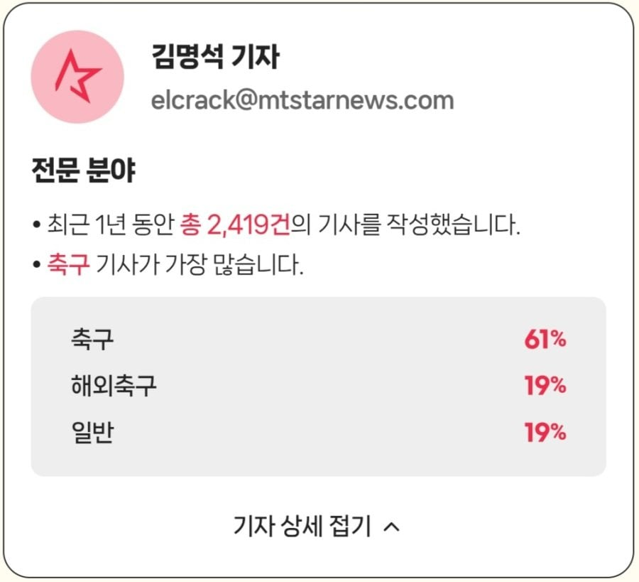

(노시환 인터뷰 날조 기사 쓴 기자)
그럴때마다 진짜 개좆돼버려서 기분이 애매함
띵보부터 심판성접대에 이어 이번 인터뷰까지
뭐 건승하십쇼

(노시환 인터뷰 날조 기사 쓴 기자)
그럴때마다 진짜 개좆돼버려서 기분이 애매함
띵보부터 심판성접대에 이어 이번 인터뷰까지
뭐 건승하십쇼
걍 처망했으면 국민들 인질로 레저하는거 잖아 걍 꼴사나움
이참에 예술,체육요원 병역혜택도 폐지하고 여자들도 병역의무 논의해야한다고 생각함
군대가 전투병과만 있는것도아닌데 여자라는이유로 왜 아겜 금메달 이상의 혜택을 조건없이 누리는지 근본적인 질문을 던질때임
이스라엘처럼 행정으로 돌리는 정도면 난 찬성
복무기간에 남자와 차등을 둘 것이나 등등 논의해야 할 부분들이 있긴 할 듯
공익요원도 그렇고
그리고 임신, 자녀 유무 및 부양가족 등도 고려해야함
k리그=세금 ㅋㅋㅋ
쟤네들 연금도 주고 병역더 빼고 이러는거 완전 70년대 그거아님?
노시환...인터뷰 전문 보면 날조도아니더만
날조 맞음? 인터뷰 두번 했다는데?
노시환 날조 아닌데? '김남일'하려고?
노시환 날조 아닌데 뭔 개소리지
세금 투입도 그렇고....왜 병역 혜택이 있는지 모르겠음
꼭 축구뿐만 아니라 엘리트 체육이 성공하든 실패하든,
체육 뿐만 아니라 예체능 전체적으로 말이지
국민에게 무슨 이익이 있는지 모르겠고 꼭 사수해야하는지....
아무리 포장해도 결국 없는 사람만 군대가서 뺑이치라는 얘기라서;;;